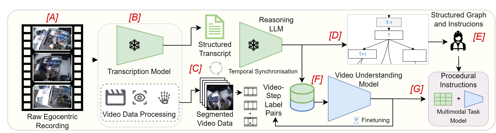
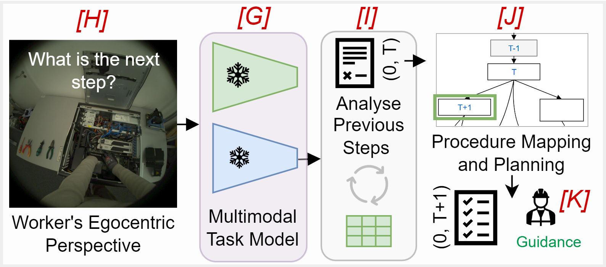

System Pipeline
IndEgo Assistant consists of two connected phases. During
offline procedure learning, multimodal expert
demonstrations are transformed into validated task knowledge and
trainable video representations. During online worker
guidance, the resulting task model observes the worker,
tracks execution history, maps the current state onto the validated
procedure graph, and recommends the next valid action.
Offline learning · A–G
Learning Procedures from Expert Demonstrations
The offline pipeline captures how an expert performs and explains
an industrial procedure. Speech, video, gaze, and complementary
camera perspectives are temporally aligned to produce step-level
training examples and structured procedural knowledge.

Offline procedure learning. Raw expert
demonstrations are converted into a reviewed procedure graph,
step-aligned video–label pairs, and a multimodal task model.
A
Expert Demonstration Capture
An expert performs the assembly or disassembly procedure
while synchronized egocentric video, exocentric video,
audio narration, and optional eye gaze are recorded.
Egocentric video captures the worker's interaction
perspective, while exocentric cameras provide complementary
workspace and process context.
B
Speech Transcription
WhisperX converts the expert's spoken narration into a
temporally aligned transcript. Word- and segment-level
timestamps connect procedural descriptions to the
corresponding moments in the recordings.
C
Video Segmentation and Synchronization
The recordings are divided into candidate procedural
segments using the transcript-derived temporal boundaries.
Ego video, exo video, narration, and gaze samples are
synchronized so that every segment refers to the same
execution interval.
D
Procedure and Task-Graph Extraction
A reasoning language model converts the structured
transcript into step labels, procedural instructions, and
an initial precedence graph. The graph represents valid
ordering constraints, including sequential, parallel, and
alternative execution paths.
E
Expert Review
A human expert reviews the automatically generated steps,
instructions, temporal boundaries, and graph edges. This
validation stage prevents uncertain language-model outputs
from becoming authoritative process constraints.
F
Video Representation and Task Adaptation
Step-aligned clips are encoded using a frozen V-JEPA 2
video backbone. With one demonstration, the system stores
representations in a retrieval memory bank. With multiple
demonstrations, a lightweight task-specific classifier can
be trained over the frozen representations.
G
Multimodal Task Model
The validated procedure graph, procedural instructions,
video representations, view configuration, and recognition
component are packaged into a reusable task model for
online assistance.
Egocentric, Exocentric, and Gaze-Aware Understanding
The implementation supports three evaluation modes:
ego only, exo only, and
ego + exo. Egocentric video provides detailed
hand–object interaction evidence from the worker's perspective.
Exocentric video provides a wider view of the workspace, object
arrangement, body motion, and events that may fall outside the
egocentric field of view. In the combined configuration, both
perspectives are fused into a fixed multimodal representation.
Eye gaze is available only for the egocentric stream. It is used
to construct a gaze-centred or foveal visual representation that
complements the full egocentric frame. In exo-only experiments,
the gaze feature and its availability mask are explicitly
disabled.
Online guidance · H–K
Context-Aware Worker Assistance
During deployment, the system observes the worker's current
activity and relates it to both the execution history and the
validated procedure graph. Guidance is therefore conditioned not
only on visual similarity, but also on which steps are currently
permitted by the task structure.

Online worker guidance. Live observations are
mapped to the learned procedure, combined with execution history,
and used to identify the next valid action.
H
Live Worker Observation
The worker's ongoing activity is captured as a stream of
short video clips. Depending on the deployment setup, the
system can use egocentric observations, exocentric
observations, or both, with optional gaze available for
the egocentric view.
I
Action Recognition and History Update
The multimodal task model compares the current observation
with its learned step representations and predicts or
retrieves the most likely procedural step. Confirmed steps
are added to the execution history, creating a persistent
representation of progress through the task.
J
Procedure Mapping and Planning
The recognized action and execution history are mapped onto
the reviewed procedure graph. The planner identifies which
successor steps have satisfied prerequisites and are
therefore valid at the current point in the procedure.
K
Next-Step Guidance
The system presents one or more valid next actions together
with the corresponding procedural instructions. The
language model may adapt the wording of the guidance, but
it cannot override the constraints encoded in the
expert-validated procedure graph.
Models and Their Roles
| Component |
Role in the pipeline |
| WhisperX |
Transcribes expert narration and associates the text with
temporal boundaries in the demonstration.
|
| Llama 3.1 |
Extracts procedural steps, instructions, and candidate
precedence relations, and can phrase online guidance.
|
| V-JEPA 2 |
Produces video representations for ego-global,
ego-gaze-foveal, and exo-global observations.
|
| Memory bank or linear probe |
Recognizes task steps using retrieval when data is scarce
or lightweight supervised adaptation when multiple
demonstrations are available.
|
| Validated procedure graph |
Constrains planning to steps whose procedural prerequisites
have been satisfied.
|
Overview
Assembly and disassembly processes rely on expert knowledge that is difficult to document, reuse, and transfer. This paper presents a data-centric approach for extracting structured task knowledge from expert demonstrations using egocentric and exocentric recordings. Temporal and multimodal information from video and narration is jointly encoded to derive structured task representations that enable procedural documentation and context-aware worker guidance. The approach is evaluated on a real-world disassembly case study, demonstrating that video-based representations capture procedural structure and execution context beyond static image-based methods. The results highlight the potential of egocentric video understanding for repair, training, and circular manufacturing applications.
Citation
@article{chavan2026indego,
title={AI-based worker guidance in assembly and disassembly operations using multimodal ego/exo-centric data capture and structured task knowledge},
author={Chavan, Vivek and Krüger, Jörg},
journal={CIRP Annals},
year={2026}
}